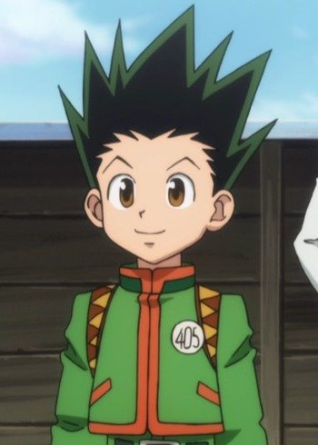

My best character in Anime is Monkey d.Luffy, The protagonist of the japanese manga series One piece, He is a pirate and a captain of his ship, He is very loyal to his friends.
Monkey D.Luffy
Gon Freecss:
My second best character is Gon Freecss who is the protagonist of the japanese manga series Hunter x Hunter, Gon's dream is to become a hunter like his father because his father Ging Freecss left him when he was young for the same thing, So he wanted to know why being a hunter was so interesting that his father was willing to leave him and neglect his parenting duty in order to become a hunter.

Gon Freecss